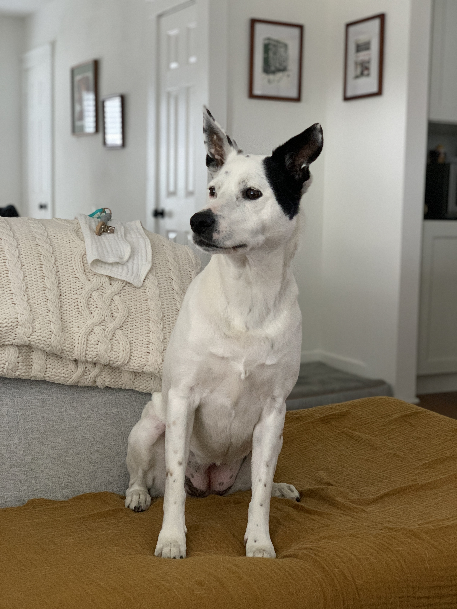

En adopciónMilo
2 años · MachoCompañero de paseos y fan de los mimos.
Conocer a Milo
Milo tiene aproximadamente 2 años. Es cariñoso y disfruta los paseos. Su salud y su convivencia con otros animales deberán confirmarse con el equipo. En la web completa, desde esta ficha podrás solicitar su adopción y coordinar una entrevista.